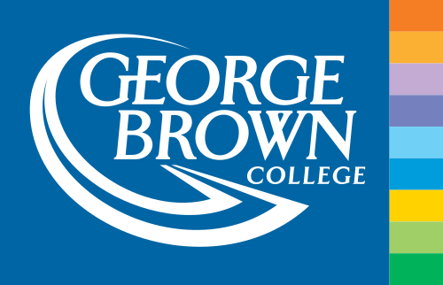

About
I’m Stefano Soares, a Graphic Design student at George Brown College. I’m interested in typography, identity design, and creating visual systems that look sharp and communicate fast.
How I Work
I start by defining the goal and audience, then explore multiple directions, test what reads best, and refine the strongest option. I care about grid, spacing, hierarchy, and consistency—because that’s what makes design feel “done,” not just decorated.
